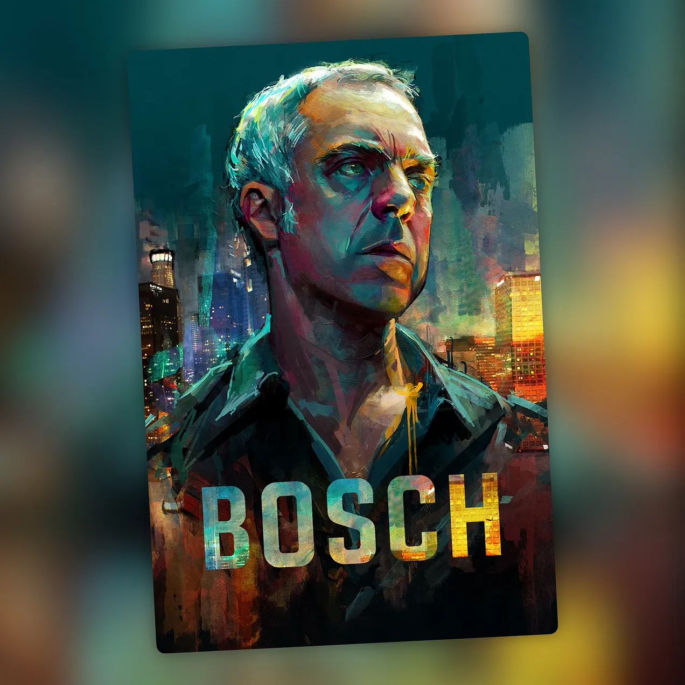

Bosch
Jazz, crimen y ningún atajo

Hay series que te enganchan con golpes de efecto, twists imposibles o personajes que gritan sus emociones. Y luego está Bosch, que hace exactamente lo contrario: baja la voz, pone jazz de fondo y te arrastra igualmente.
Es pura novela negra hecha serie. Oscura, sobria, adictiva. Sin artificios. Sin condescendencia. La clase de ficción que confía en que el espectador puede seguirle el ritmo sin que nadie le lleve de la mano.
Su protagonista, Hieronymus Bosch, encarna al detective clásico en su forma más esencial: terco, ético, obsesionado con la verdad hasta un punto que a veces roza la autodestrucción. No es un héroe fácil de querer. Es difícil, contradictorio y muchas veces incómodo. Pero es imposible no respetarle. Titus Welliver lo borda con una intensidad contenida que ya quisieran muchos actores con más reconocimiento: dice más con una mirada que otros con un monólogo.
La serie está basada en las novelas de Michael Connelly, uno de los grandes maestros del thriller contemporáneo, y se nota que hay respeto por el material de origen. Connelly no solo construyó un personaje inolvidable, sino todo un universo de crimen, corrupción y justicia en Los Ángeles, una ciudad que en sus libros —y aquí también— tiene tanta presencia como cualquier actor. La adaptación traslada ese universo con fidelidad y con criterio: sabe cuándo comprimir, cuándo expandir y cuándo simplemente dejar que la atmósfera haga su trabajo.
El reparto merece mención aparte. Lance Reddick y Jamie Hector, imborrables para cualquiera que haya visto The Wire, elevan cada escena en la que aparecen. No son secundarios de relleno: son columnas sobre las que se sostiene buena parte del peso dramático de la serie. Sus personajes tienen historia, tienen contradicciones, tienen peso. En una ficción donde nada es blanco o negro, ellos son los grises más interesantes.
Siete temporadas. Siete temporadas en las que la serie no desfallece, no pierde el foco y no traiciona lo que prometió desde el primer episodio. Eso, hoy en día, no es poca cosa.
Y cuando crees que todo ha terminado, continúa. Bosch: Legacy recoge el testigo con Bosch convertido en detective privado, fuera del sistema pero igual de incapaz de mirar hacia otro lado. La esencia permanece intacta. La obsesión también.
Si te gusta el buen noir, los detectives con principios que se doblan pero no se rompen y los casos que no se cierran con facilidad, Bosch no es una apuesta segura. Es una apuesta que ya ganaste antes de empezar.
Ficha técnica
- Creada por: Eric Overmyer
- Basada en: las novelas de Harry Bosch, de Michael Connelly
- Reparto principal: Titus Welliver, Jamie Hector, Amy Aquino, Lance Reddick, Annie Wersching, Madison Lintz
- Temporadas: 7 (2014-2021)
- Plataforma: Amazon Prime Video